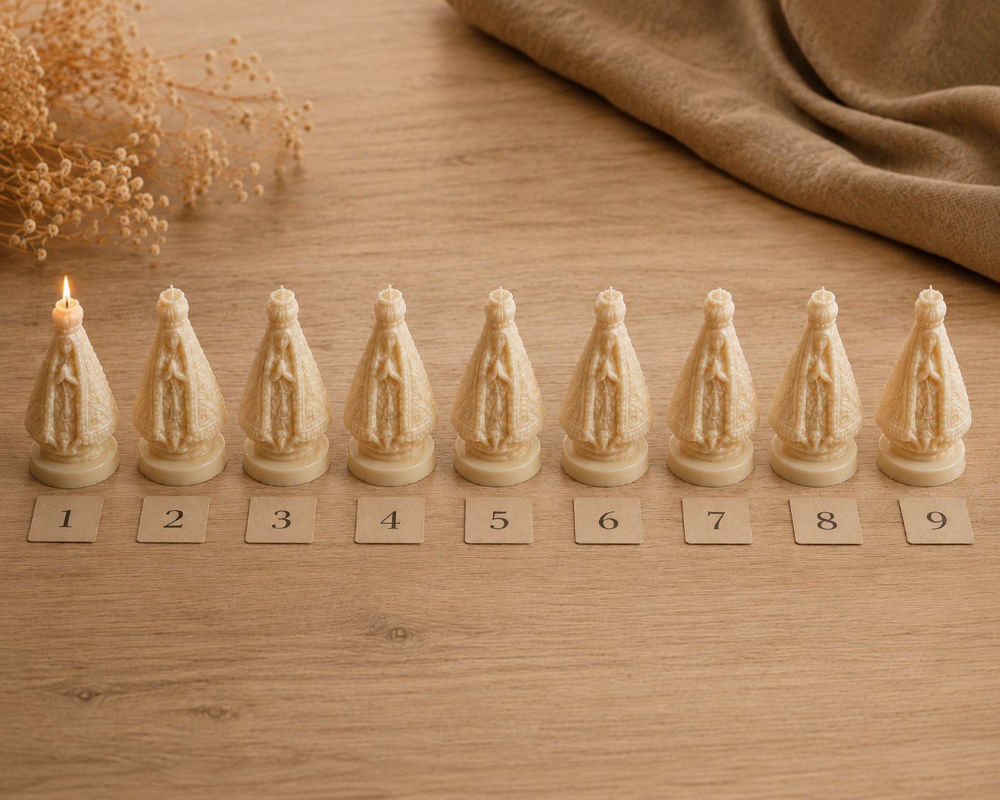
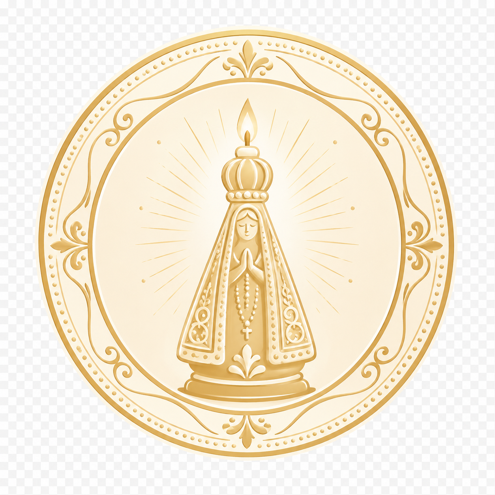

Não é falta de força de vontade. Se fosse só isso, você já teria parado depois da primeira vez que jurou "nunca mais". Quantas vezes já foi a última vez? Você perdeu a conta, não perdeu? Isso não te faz fraco. Te faz alguém que tentou romper sozinho uma corrente que nunca foi feita pra ser quebrada sozinho. O vício em apostas tem raiz espiritual. É uma corrente de compulsão. Aperta mais forte a cada aposta perdida. A cada mentira contada em casa. A cada saldo que devia estar na conta, e não está. A Vela da Libertação das Apostas é um kit de novena (nove velas artesanais, uma para cada noite) criado para dar corpo ao ato de fé que quebra esse ciclo, noite após noite, até você recuperar o controle que o jogo tirou de você.
9 velas artesanais, esculpidas uma a uma, uma pra cada noite do ritual que rompe a escravidão das apostas.
Cera vegetal, queima limpa, sem a fumaça carregada da parafina comum pesando ainda mais no ar de uma casa que já está pesada demais.
7cm de altura aprox., cabe escondida na gaveta ou visível no altar, a escolha é sua.
Embalagem neutra e discreta, sem identificação externa. Ninguém precisa saber, só você e Deus.
Produção artesanal em lotes de 100 unidades. Quando este esgota, você espera o próximo. O vício não espera ninguém.
Feita à mão
Uma corrente não se quebra com pressa
Não é produção industrial em série, feita pra vender rápido. Cada vela é moldada manualmente em cera vegetal derretida, despejada em moldes de silicone que carregam o símbolo da libertação. É um processo lento, do mesmo jeito que a sua recuperação também vai ser: dia após dia, sem atalho.
O que vem no kit
9 velas numeradas por noite
Sequência clara pra você não perder o fio da novena, mesmo nos dias mais difíceis.
Cartão com o roteiro das 9 noites
Passo a passo escrito noite por noite, nada de adivinhar o que fazer ou torcer pra lembrar certo.
Embalagem neutra e discreta
Caixa sem identificação externa. Chega em casa sem levantar suspeita ou constrangimento.
Cera vegetal de queima limpa
Sem parafina de origem duvidosa, sem fumaça pesada sufocando o ar da sua libertação.
O ritual das nove noites
Uma vela por noite, na ordem, até a corrente se romper

Antes de começarEscolha um lugar fixo: uma gaveta, uma cômoda, um cantinho só seu. A partir de hoje ele é o palco das suas nove noites: é ali que as velas ficam guardadas, esperando a vez de cada uma acender.
A cada noiteNo horário em que você normalmente abriria o app pra apostar, acenda a vela do dia. Fique com ela até apagar. É o seu novo horário. Cada noite é um capítulo; pule um, e a corrente ganha fôlego.
Ao finalComplete a nona noite com a última vela, e apague a chama sabendo que, pela primeira vez em nove noites seguidas, o app não ganhou esse horário de você. O kit acompanha um cartão com o roteiro completo da libertação. O que muda entre a primeira noite e a nona, quem já terminou conta melhor que a gente: os relatos estão logo mais abaixo.
Enquanto você lê isso, o próximo depósito já está sendo pensado
Você já viu como as nove noites conduzem a quebra da corrente. Falta acender a primeira vela.
Não precisa de altar grande nem de espaço reservado. Um canto do quarto, uma mesa de cabeceira, um lugar que ninguém mais precisa ver. A vela é o novo ponto de referência, o que te puxa pra dentro de casa, pra dentro de você, na hora exata em que antes o dedo ia direto pro aplicativo.
Sem julgamento, sem exposição
Chega em casa e ninguém precisa saber
Cada kit sai embalado em caixa neutra, sem nome do produto estampado por fora. Se mora sozinho, ninguém vai perguntar nada. Se mora com a família, você decide quando e se vai contar. A vergonha não pode ser mais um motivo pra adiar a sua libertação.
Famílias reconstruindo a confiança, uma noite de cada vez
Não é só quem aposta que reza essa novena. São esposas rezando pelo marido que promete e recai. São mães acendendo a vela em silêncio pelo filho que não pede ajuda. A libertação de um só, muitas vezes, começa na fé de quem mais sofre ao lado dele.
Quem acendeu as nove velas conta o que mudou
"Eu tinha perdido o décimo terceiro inteiro em uma noite de bets e ainda menti pra minha esposa dizendo que tinha sido roubado. Acendi a primeira vela sem acreditar em nada, só de desespero. Na sexta noite eu chorei mais do que rezei. Hoje faz 40 dias que não entro em nenhum aplicativo."
Marcos T., 34 anosRecife, PE
"Comprei o kit família sem meu marido saber. Acendia a minha vela no banheiro, trancada, rezando por ele enquanto ele jogava do outro lado da parede. No oitavo dia ele me viu chorando com a vela na mão e perguntou o que era. Foi a primeira conversa de verdade que a gente teve em meses."
Juliana R.Belo Horizonte, MG
"Meu filho tem 26 anos e já vendeu a moto duas vezes pra cobrir dívida de aposta. Eu não conseguia mais nem falar com ele sem gritar. Acendi a novena por ele, todas as nove noites, sozinha na cozinha depois que ele dormia. No fim, pedi pra ele ir comigo numa reunião de apoio. Ele foi. Não é sobre a vela ter resolvido, é sobre a vela ter me dado forças pra não desistir dele."
Dona MarleneFortaleza, CE
"Já tinha tentado parar sozinho umas quinze vezes. Sempre voltava na primeira notificação de bônus. Dessa vez eu bloqueei os apps E acendi a vela toda noite. Não sei dizer qual das duas coisas segurou mais, só sei que juntas funcionaram quando nada sozinho tinha funcionado antes."
Anderson V., 29 anosCuritiba, PR
"A vergonha era o pior. Pior que a dívida. Comprei achando que ninguém ia entender que eu, uma mulher, também caí nesse buraco das apostas online. A caixa chegou sem nome nenhum escrito. Isso me deu coragem de nem esconder de mim mesma. Hoje falo abertamente sobre minha recuperação."
Patrícia G.Porto Alegre, RS
"Nove noites parecem pouco quando você já perdeu anos pro jogo. Mas foi a primeira vez que eu completei alguma coisa até o fim desde que o vício começou. Terminei a novena e liguei pro CAPS da minha cidade no dia seguinte. Uma coisa levou à outra."
Rogério A., 41 anosSalvador, BA
Perguntas Frequentes
A vela sozinha resolve o vício em apostas?+
Não, e qualquer promessa dizendo o contrário seria mentira. A vela é sustento espiritual, o ato de fé que te dá força pra manter a decisão de parar noite após noite. Os passos práticos continuam sendo indispensáveis: bloquear o acesso aos aplicativos de aposta, buscar apoio de terapia ou de grupos de apoio, e conversar com quem você confia. A fé sustenta a caminhada, ela não caminha sozinha por você.
De que material é feita a vela?+
Cera vegetal, moldada à mão em fôrmas de silicone. Não usamos parafina de origem duvidosa. A queima é limpa, sem a fumaça carregada das velas industriais comuns.
Quanto tempo cada vela dura acesa?+
Cada vela tem cerca de 7cm de altura e queima em média entre 3 e 5 horas contínuas, o suficiente pra atravessar o horário em que a vontade de apostar costuma bater mais forte.
A embalagem chega discreta?+
Sim. Ninguém que recebe a caixa descobre o que tem dentro antes de você decidir contar. Kit sai em caixa neutra, sem estampa do nome do produto na parte externa, sem qualquer identificação do conteúdo por fora.
O kit vem com instruções da novena?+
Sim. O Kit Novena Completo acompanha um cartão simples com a sequência das nove noites, pra te ajudar a manter o ritual do início ao fim, mesmo nos dias em que a vontade de recair for mais forte.
Posso comprar para presentear alguém, sem que a pessoa saiba?+
Sim. O Kit Família (2 Novenas) foi pensado justamente pra isso: uma novena pra você rezar, e outra pra rezar por quem você ama e ainda não teve coragem de pedir ajuda. É o caso da Juliana R., aqui em cima nos depoimentos: comprou escondido do marido e acendeu a vela dela trancada no banheiro, rezando pela dele.
Qual o prazo de entrega?+
Cada lote é artesanal e limitado, então o prazo de envio varia com a demanda do lote atual, não é fábrica rodando 24 horas. Assim que despachar, você recebe o código de rastreio por e-mail, na mesma embalagem discreta de sempre.

Garantia de reposição: sem enrolação
Chegou danificada ou com defeito de fabricação? Manda uma foto em até 7 dias após a entrega e trocamos sem custo. Sem "analisando seu caso", sem letra miúda. E se em algum momento o peso da situação for maior do que a fé sozinha consegue segurar, procure ajuda profissional: terapia, grupos de apoio ou os canais de bloqueio das plataformas de aposta. Pedir ajuda também é um ato de coragem.
Nove noites contra anos de corrente
Quanto mais tempo a aposta fica solta, mais caro ela cobra. O ciclo começa na noite em que você acender a primeira vela.
Produção artesanal em lotes limitados, uma vela de cada vez. Lote atual: 100 unidades. Novo lote só sai depois que este esgotar, e cada dia de espera é mais uma noite que a corrente continua puxando.